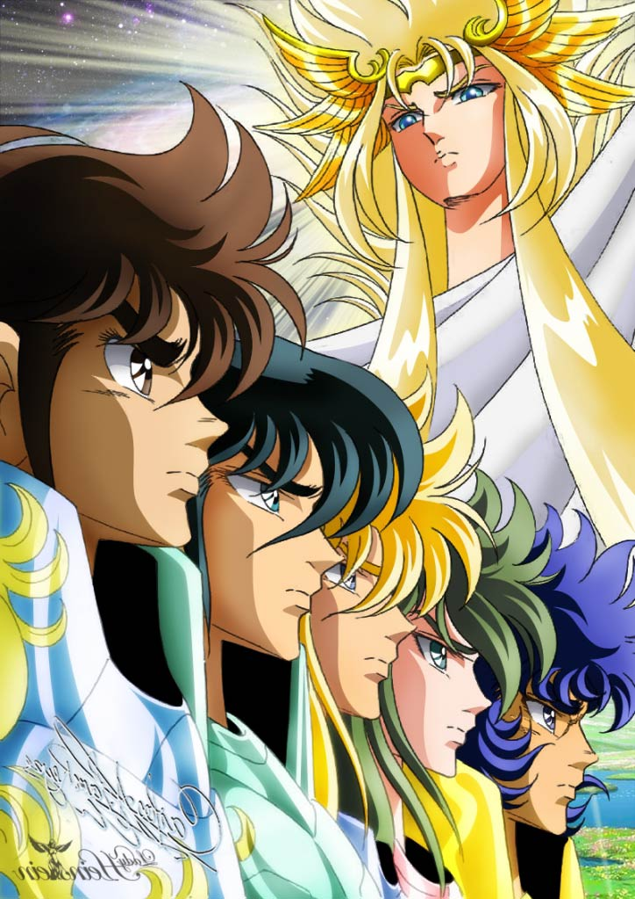

Los Caballeros del Zodiaco, también conocida internacionalmente como Saint Seiya, es una de esas historias japonesas que llegaría a la televisión española en los años 90 con series como Dragon Ball, Kenshin, el guerrero samurái e InuYasha. Los Caballeros del Zodiaco consiguió convertirse rápidamente en uno de los animes más populares entre los jóvenes, quienes soñaban con tener el poder que tenían estos elegidos. Sin embargo, aunque Los Caballeros del Zodiaco es una de las historias más conocidas, aún existe una confusión generalizada acerca del orden correcto para ver los episodios. Por ese motivo, nos parece conveniente explicar a continuación cuál es el orden para ver Los Caballeros del Zodiaco de principio a fin.